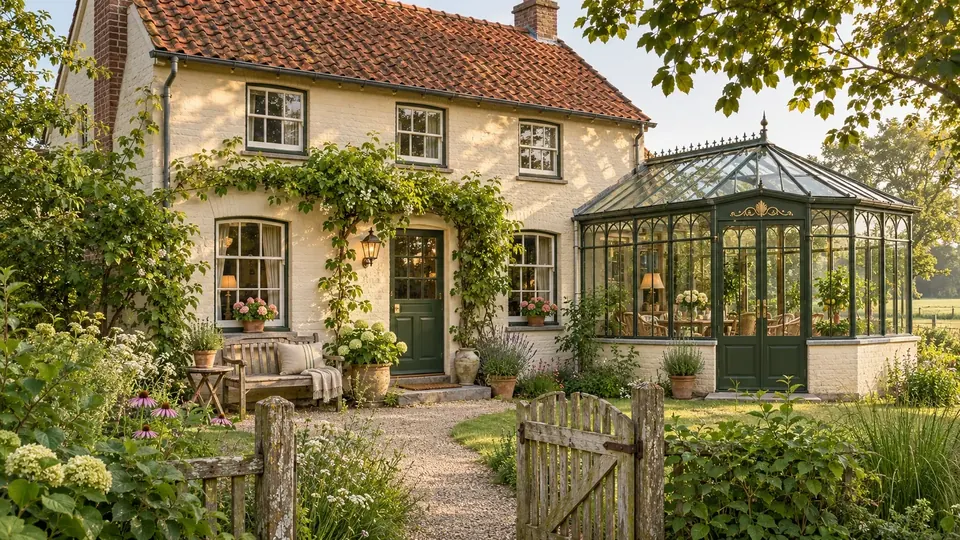
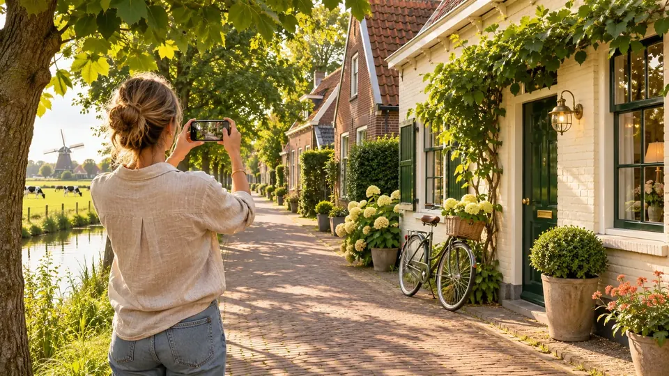

Walks
Take your wish outside.
Two walks, two moods. Both work outdoors, indoors or at home, and what you fill in stays on your phone.

Walk
The Road to Tomorrow
A walking journey in seven walks to the house with the green door. You read a short passage, walk on with one question and at the end take your own future card with you.
Outdoors, indoors or on the spot · 15, 25 or 35 minutes
Begin at the gate →
Walk · scavenger hunt
The Wish Hunt
Pick your wishes, walk from point to point and snap a photo for each one. Money, love, a house with a little tower: anything goes. At the end you have a vision board from your own neighbourhood.
With a map, own route or at home · 20, 35 or 50 minutes
Start a hunt →